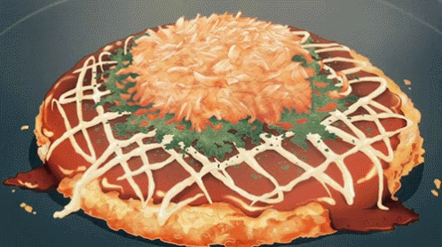

Okinomiyaki

Description
A savory japanese pancake consisting of wheat flour with various toppings.
Ingredients
Batter
- 1 cup plain flour
- 1/4 tsp kosher salt
- 1/4 tsp baking powder
- 3/4 cup dashi
- 4 large eggs
Other ingredients
- 1 head cabbage
- 1/2lb thinly sliced pork
- Nuetral flavoured oil
Quick okonomiyaki sauce
- 1 tbsp sugar
- 2 tbsp oyster sauce
- 4 tbsp ketchup
- 3 tbsp worcestershire sauce